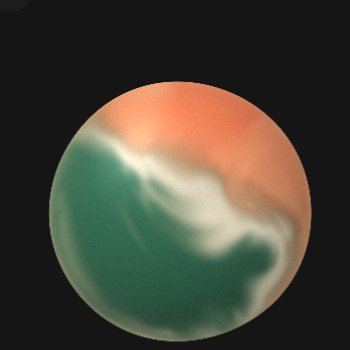
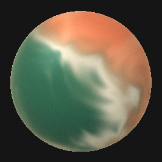
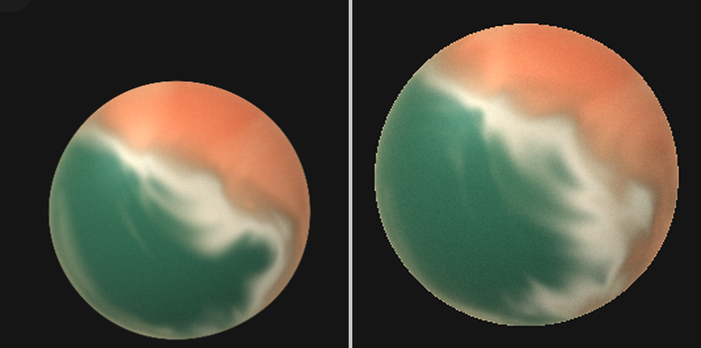

Voice Orb parity
beui.dev reference (left) vs Flutter BeuiVoiceOrb (right). Dark, live shader. design-compare widget / dark-ui.
74.86still overall
85.94color · ΔE 2.88
90.5motion score
0.91energy ratio



BeuiVoiceOrb
activity | activityListenable | analyser
colors, speed, active, onError, semanticLabel
Semantics(image, excludeSemantics)
SingleMotionBuilder(SPRING_GLIDE 700/50/0.5)
CustomPaint → shaders/beui_voice_orb.frag
| fallback BeuiAgentStrings.orbUnavailable